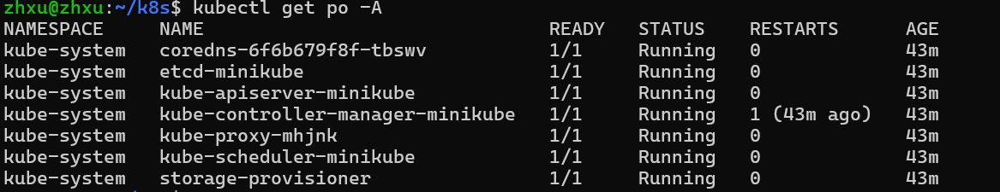
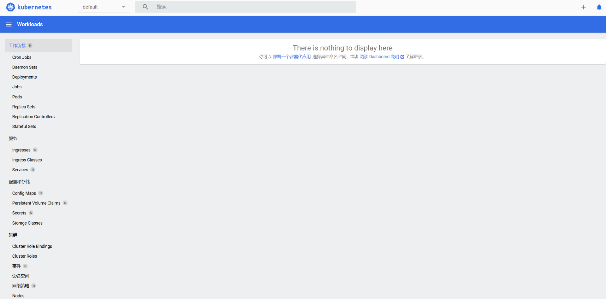

一、WSL
Windows Subsystem for Linux (WSL) 是一项功能，允许在 Windows 系统上运行 Linux 发行版。安装教程如下：
https://learn.microsoft.com/zh-cn/windows/wsl/install
二、Docker
1、简介
Docker是一个开源的应用容器引擎，让开发者可以打包他们的应用以及依赖包到一个可抑制的容器中，然后发布到任何流行的Linux机器上，也可以实现虚拟化。容器完全使用沙盒机制，相互之间不会存在任何接口。几乎没有性能开销，可以很容易的在机器和数据中心运行。最重要的是，他们不依赖于任何语言、框架或者包装系统。Docker和虚拟机类似，都是虚拟化技术。

因此，借助Docker，我们可以很方便地部署各种环境
2、Docker的核心概念
（1）镜像（Image）
Docker 镜像是一个轻量级、可执行的独立软件包，包含了应用程序运行所需的所有内容，包括代码、库、环境变量、配置文件等。镜像是容器的蓝图或模板，是一个静态的文件，描述了容器的运行环境。
（2）容器（Container）
容器是镜像的运行时实例，它是一个隔离的、轻量的执行环境。容器是临时性的，可以启动、停止、移动并删除。容器是由镜像创建的，并且可以在不同的计算机或环境中运行，而不依赖于主机操作系统。
（3）Dockerfile
Dockerfile 是一个文本文件，其中包含了构建 Docker 镜像的所有指令。它描述了如何从一个基础镜像开始，通过一系列步骤（例如安装软件、复制文件、设置环境变量等）构建出新的镜像。
3、配置Docker环境
在刚刚搭建的linux平台中，配置Docker，教程参见下面（任选一个就行）
https://docs.docker.com/engine/install/ubuntu/
https://cloud.tencent.com/document/product/213/46000#1H-kXbk9zoqvzYMVPVsBO
需要注意的一点是，由于国内镜像源很多已经失效，所以在安装完docker后建议更改为当前还可使用的镜像源，方便拉取镜像，更改镜像源的方法如下：
- 编辑镜像源文件
sudo vi /etc/docker/daemon.json
- 按键盘上的 i 键，之后把下面的代码贴进去
{ "registry-mirrors" : [ "https://docker.m.daocloud.io", "https://noohub.ru", "https://huecker.io", "https://dockerhub.timeweb.cloud", "https://docker.rainbond.cc" ] }
- 按esc键，退出编辑模式。
- 输入下面的命令，再回车
:wq
- 重启docker使其生效
sudo systemctl restart docker
4、Docker的常用命令
（1）帮助命令
- 显示docker的信息
docker version
- 显示docker的信息
docker info
- 帮助命令
docker 命令 --help
（2）镜像命令
- 显示当前所有的本地镜像
docker images
- 查找镜像
docker search
由于镜像源的限制，无法使用search进行查找，因此在浏览器访问下面的网页，进入Dockerhub镜像站搜索想要的镜像：
Docker Hub Container Image Library | App Containerization
- 拉取镜像
docker pull
- 删除镜像
docker rmi
（3）容器命令
- 列出所有（运行的）容器
docker ps -a
docker ps
- 新建容器并启动
docker run [参数] image
参数说明
--name="name" 容器名字：用来区分容器
-d 后台方式运行：相当于nohup
-it 使用交互式运行：进入容器查看内容
-p 指定容器的端口（四种方式）小写字母p
- 进入当前正在运行的程序
docker exec -it 容器id /bin/bash
- 从容器内拷贝文件到主机
docker cp 容器id:容器路径 主机路径
如：docker cp 6eda31ad7987:/home/test.java /home
- 退出容器
exit
- 启动容器
docker start 容器id
- 重启容器
docker restart 容器id
- 停止当前运行的容器
docker stop 容器id
- 强制停止当前容器
docker kill 容器id
- 删除容器
docker rm 容器id
- 删除全部容器
docker rm -f $(docker ps -aq)
- 查看容器日志
docker logs 容器名
三、Kubernetes
1、简介
Kubernetes（也称为 K8s）是一个开源系统，用于自动部署、扩展和管理容器化应用程序。

k8s和docker的关系：
- Docker 提供了容器化技术的基础，专注于单机和单容器的构建与运行。
- Kubernetes 构建在 Docker 等容器技术之上，负责管理和编排大规模的容器化应用。
2、k8s的核心概念
（1）Pod
- 定义：Pod是Kubernetes中最小的可部署对象，用于托管容器应用程序。一个Pod可以包含一个或多个容器，这些容器共享网络和存储，并共同部署到同一节点上。
- 作用：Pod是Kubernetes管理的最小单元，它提供了一种将容器组合成一个逻辑单元的方式，以便在集群中共同部署和管理。
（2）Deployment
- 定义：Deployment是用于定义Pod如何部署和更新的控制器。它允许用户指定副本数量、升级策略等，并确保指定的Pod始终处于预期状态。
- 作用：Deployment通过管理ReplicaSet来确保Pod的副本数量符合预期，并支持滚动更新和回滚操作，使得应用程序的部署和更新更加灵活和可靠。
（3）Service
- 定义：Service是一种抽象，用于定义一组Pod的访问方式。通过Service，可以为一组Pod提供统一的DNS名称和稳定的IP地址，实现负载均衡和服务发现。
- 作用：Service为Pod提供稳定的访问入口，使得客户端能够透明地访问后端Pod集群，同时支持负载均衡和故障转移。
（4）Namespace
- 定义：Namespace提供了一种将集群划分为多个虚拟集群的方式。每个Namespace都可以包含自己的资源对象，帮助组织和隔离不同团队或项目的资源。
- 作用：Namespace通过逻辑隔离集群资源，提高了集群的可用性和安全性，使得不同团队或项目可以独立管理自己的资源。
（5）ReplicaSet
- 定义： ReplicaSet 是 Kubernetes 中用于确保指定数量的 Pod 副本在集群中运行的控制器。它会自动创建或删除 Pod，以确保当前运行的 Pod 数量与定义中的副本数一致。
- 作用： ReplicaSet 的作用是保证应用的高可用性和负载均衡。它能够确保某个应用（即 Pod）在任何时间都有固定数量的副本在运行。如果某个 Pod 因为某种原因（如节点故障、容器崩溃等）停止工作，ReplicaSet 会自动创建新的 Pod 以替代它，确保副本数始终保持一致。
（6）ConfigMap/Secret
- 定义: ConfigMap 是一种用于存储非敏感配置信息的 Kubernetes 对象。它允许将配置数据以键值对的形式存储，并能够被 Pod 或其他 Kubernetes 对象引用。
- 作用: ConfigMap 使得配置与应用代码解耦，支持动态修改应用的配置，而不需要重新构建镜像或修改代码。可以将配置作为环境变量、命令行参数或挂载到容器的文件系统中。
- Secret是加密后的ConfigMap，用于存储敏感配置信息的 Kubernetes 对象
（7）Node
- 定义：Node是Kubernetes集群中的工作节点，负责运行容器化的应用程序。每个Node都有自己的资源和容量，可以托管多个Pod。
- 作用：Node是Kubernetes集群中的计算资源，通过运行Pod来承载应用程序的容器。Node与Master节点协作，共同实现集群的管理和控制。
（8）Cluster
- 定义：Cluster是由多个Node组成的Kubernetes集合，共同管理和运行容器化应用程序。Cluster包括Master节点和Worker节点，Master节点负责集群管理，Worker节点负责运行应用程序。
- 作用：Cluster提供了完整的容器编排和管理能力，通过Master节点和Worker节点的协作，实现了应用程序的自动化部署、扩展和管理。
（9）Master节点组件
- API Server：集群的统一入口，各组件协调者。
- Controller Manager：负责监控集群状态并确保集群达到预期状态，一个资源对应一个控制器。
- Scheduler：负责将新创建的Pod分配到集群中的节点上，根据资源需求、策略和约束条件等进行调度决策。
- etcd：分布式键值存储系统，用于存储集群的配置信息、状态信息等。
（10）Worker节点组件
- Kubelet：运行在每个工作节点上的代理，负责管理节点上的Pod生命周期，与Master节点上的API Server进行通信。
- kube-proxy：用于网络代理和负载均衡的组件，维护节点上的网络规则和转发规则。
3、部署k8s
（1）安装kubectl
Kubectl是Kubernetes 命令行工具，让用户可以对 Kubernetes 集群运行命令。用户可以使用 kubectl 来部署应用、监测和管理集群资源以及查看日志。
参考文档：https://kubernetes.io/zh-cn/docs/setup
- 下载 Kubernetes 的 kubectl 二进制文件
curl -LO "https://dl.k8s.io/release/$(curl -L -s https://dl.k8s.io/release/stable.txt)/bin/linux/amd64/kubectl"
- 下载 kubectl 校验和文件：
curl -LO "<https://dl.k8s.io/release/$>(curl -L -s <https://dl.k8s.io/release/stable.txt>)/bin/linux/amd64/kubectl.sha256"
- 基于校验和文件，验证 kubectl 的可执行文件：
echo "$(cat kubectl.sha256) kubectl" | sha256sum –check
- 验证通过时，输出为：kubectl: OK
- 安装 kubectl：
sudo install -o root -g root -m 0755 kubectl /usr/local/bin/kubectl
- 验证版本：
kubectl version –client
（2）安装minikube
Minikube 是一种轻量级的 Kubernetes 实现，可在本地计算机上创建 VM 并部署仅包含一个节点的简单集群。Minikube 可用于 Linux ， macOS 和 Windows 系统。Minikube CLI提供了用于引导集群工作的多种操作，包括启动、停止、查看状态和删除。
参考文档：minikube start | minikube (k8s.io)
- 在 x86-64 Linux 上使用二进制下载安装最新的 minikube 稳定版本
curl -LO <https://storage.googleapis.com/minikube/releases/latest/minikube-linux-amd64>
sudo install minikube-linux-amd64 /usr/local/bin/minikube && rm minikube-linux-amd64
- 验证版本
minikube version
（3）将当前用户添加到docker的用户组里
- 将当前用户添加到 Docker 组：
sudo usermod -aG docker $USER
- 运行以下命令来使组变更立即生效：
newgrp docker
- 验证 Docker 权限，能看到当前运行的docker就是添加成功了：
docker ps
（4）启动minikube
- 由于国内镜像源的限制，直接使用minikube start会卡在拉取镜像的环节，因此使用下面的指令启动，让它使用本地的镜像
minikube start --driver=docker --base-image="registry.cn-hangzhou.aliyuncs.com/google\_containers/kicbase:v0.0.45"
- 查看当前的集群状态
kubectl cluster-info
- 查看当前的节点信息
kubectl get nodes
- 列出Kubernetes 集群中所有命名空间（NAMESPACE）下的 Pod 信息
kubectl get po -A

（5）minikube的dashboard
- 同样由于国内镜像源的限制，在启动dashboard时会遇到卡在拉取镜像的问题，因此我们同样指定它使用本地镜像来启动dashboard
- 将所需的镜像加载进minikube中
minikube image load kubernetesui/dashboard:v2.7.0
minikube image load kubernetesui/metrics-scraper:v1.0.8

- 进入minikube查看是否成功导入
minikube ssh
docker images

- 然后退出minikube
exit
- 编辑用于部署dashboard的两个yaml文件 ，更改为本地的镜像名称，并且修改拉取镜像的策略为：从不从外部拉取，只使用本地
- 修改第一个文件：
kubectl edit deployment -n kubernetes-dashboard kubernetes-dashboard
- 修改前如下所示，可以看到是因为带了哈希值导致找不到镜像，改为我们本地导入的镜像
- 修改成下图的样子

- 修改第二个文件：
kubectl edit deployment -n kubernetes-dashboard dashboard-metrics-scraper
- 修改前如下所示，可以看到是因为带了哈希值导致找不到镜像，改为我们本地导入的镜像
- 修改成下图的样子

- 删除 Pod 并让 Kubernetes 重建，再查看状态，就能发现在running状态了
kubectl delete pod -n kubernetes-dashboard -l k8s-app=kubernetes-dashboard
kubectl delete pod -n kubernetes-dashboard -l k8s-app=metrics-scraper
kubectl get pods -n kubernetes-dashboard

启动dashboard，到浏览器访问这个url链接能看到minikube的webui了
minikube dashboard

4、minikube常用命令
- 指定本地镜像启动minikube
minikube start --driver=docker --base-image="registry.cn-hangzhou.aliyuncs.com/google\_containers/kicbase:v0.0.45"
- 查看minikube的状态
minikube status
- 停止整个minikube
minikube stop
- 进入minikube内部
minikube ssh
- 向minikube中加载某个镜像
minikube image load 镜像名:版本号
如：minikube image load spark:latest
5、kubectl的常用命令
- 查看所有 Pod
kubectl get pods
- 获取 Pod 的详细信息
kubectl describe pod pod的名称
- 根据文件进行部署
kubectl apply -f 文件名
如：kubectl apply -f hive-server2-deployment.yaml
- 停止该文件的部署
kubectl delete -f 文件名
如：kubectl delete -f hive-server2-deployment.yaml
- 查看所有转发规则
kubectl get svc
- 进入pod
kubectl exec -it pod名称 -- /bin/bash
如：kubectl exec -it metastore-6d68d64845-cctrg -- /bin/bash
- 查看pod的日志
kubectl logs pod名称
如：kubectl logs metastore-6d68d64845-cctrg
- 创建命名空间
kubectl create namespace 命名空间
- 查看所有命名空间
kubectl get namespaces
- 删除命名空间
kubectl delete namespace 命名空间
- 查看资源使用情况
kubectl top nodes
kubectl top pods